We test counter-drone systems everywhere
and can't compare any of it.
DCEF fixes that.
The Problem
Counter-UAS testing happens at dozens of sites across the country — fixed ranges, mobile evaluation teams, government programs, and private industry assessments. Each produces data in its own format, with its own accuracy assumptions, and its own success criteria.
The result is a fragmented landscape where no two test reports can be directly compared. Vendors can game evaluations, program managers can't make evidence-based procurement decisions, and the operational community is left without the cross-site visibility it needs.
What is DCEF
DCEF is a tiered, federated test and evaluation methodology that uses onboard drone telemetry — PX4 ULog and MAVLink tlog files from Pixhawk-based aircraft — as calibrated ground truth. That telemetry is correlated against radar, optical, and acoustic sensor outputs through a defined data schema, time synchronization protocol, and standardized analysis pipeline. The result: evaluations that can be compared across sites, vendors, and time.
Methodology